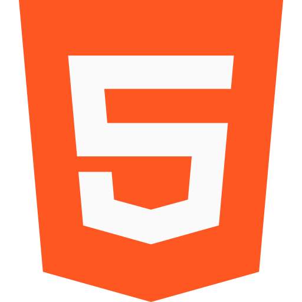
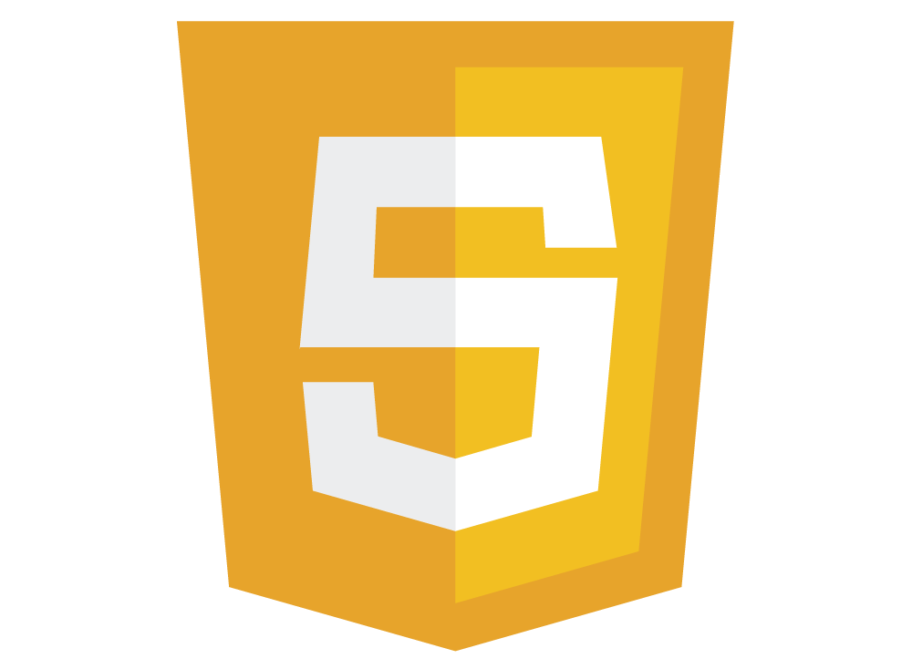

About Me
中澤弘樹
富山出身、神奈川在住の方言が抜けない27歳。
2014年4月に富山高等専門学校を卒業し、地元企業へ就職。
2019年6月転職のため上京。社会人になってから現在に至るまで、ものづくりに携わってきた。
2020年、職務中にひょんな事からVBAを使ったのと、小遣い稼ぎ目的でPythonを触り、プログラミングの面白さを思い出す。
ITでものづくりに携わる人たちの業務効率化を実現したいと思い、独学を始める。
現在、Ruby on Railsを用いて架空企業のペーパーレス化を実現できるようなアプリを構想中。

SKILL

Python
プログラミングの面白さを再確認するきっかけとなった言語。 IDE(spyder)を用いて競艇予想AI作成中(pandas,numpy,BeautifulSoup,sklearnなど使用)

HTML
Pythonでスクレイピングをする際にかじっていた言語。 独学を始めた際に最初に取りかかった。cssとともにProgate中級編まで終了。 阿部寛さんのホームページの速さに驚愕する。

CSS
htmlとともにProgate中級編まで終了。自分はデザインが苦手なことが判明した。

JavaScript
HTML,CSSときたらということで学んだ。VBAにどこか似ている気がした。ProgateのES6を100%達成。
Ruby
Railsチュートリアルでアプリを作ってみるためにProgateにて学習(100%達成)。 考え方はC言語やPythonと似ているんだなと思った。

Ruby on Rails
Progate(100%達成)からRailsチュートリアルへの難易度上昇に戸惑った。 実装しながらWebアプリの仕組みを知ることができて良かった。

Git,GitHub
Gitという単語すら知らなかった。Progateにて学習するが、実務経験が必要だなと感じた。
Command Line
学生時代にC言語のプログラミングで触っていた。